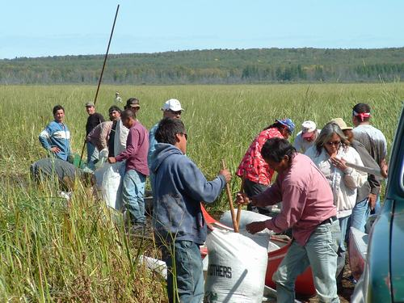

Legislation
Legislative Initiative
Our goal is to protect natural lake wild rice for the next seven generations!
 Ricers coming into landing at Big Rice Lake, White Earth Reservation, September 2005
2007 Wild Rice Bills
HFBILL 1662
 A bill for an act
relating to natural resources.
BE IT ENACTEDBY THE LEGISLATURE OF THE STATE OF MINNESOTA:
Section1. WILD RICE MANAGEMENT PLAN.
   By february 15, 2008, the commissioner of natural resources must prepare a management plan for native wild rice that includes:
    (a) the present and projected population and area of native stands;
Legislation to Protect Wild Rice Heard by Senate Committee
March 17, 2005
St. Paul: Minnesota State Senator Becky Lourey (DFL 08) brought her bill to protect Minnesota's state grain, wild rice, before the Senate Agriculture, Veterans, and Gaming Committee yesterday. The bill, SF 1566, prohibits genetically engineered wild rice from the state, specifying that "a person may not release, plant, cultivate, harvest, sell, or offer for sale in Minnesota a genetically engineered organism containing or related to wild rice."
Wild Rice Legislation Text -A bill for an act
Relating to agriculture; providing a two year moratorium on genetically engineered wild rice in the event of an application for a test plot; requiring assessment and reports during the moratorium; proposing coding for new law in chapter 18F.
BE IT ENACTED BY THE LEGISLATURE OF THE STATE OF MINNESOTA:
Section. 1. [18F.08] [TEMPORARY MORATORIUM ON GENETICALLY ENGINEERED WILD RICE.]
Wild Rice Legislation heard in House Ag Committee!
Go to our Legislation Page to find out more. Browse articles added May 5, 2005 to "Resources and Articles" page. May 1, 2005: Minnesota Izaak Walton League Resolves to Protect Wild Rice (read it on our "Tribal and Coalition Resources" page!) Star Tribune Editorial "Wild rice/No need to mess with genome" (March 21, 2005) (read it on our "Resources and Articles" page) UPDATE: Senate Committee Hearing on Bill 1566 on Wednesday March 16, 2005 went well!